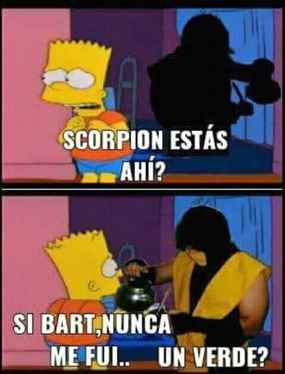

¿Por qué debería darle like?
Porque las siguientes personas te lo piden:
- Yisus
- Jesús
- Fer
- León
- Jebus
Bonus: Pasos para preparar un buen mate de escorpion
-

- Poner la pava
- Poner la yerba en el mate
- Hacer la montañita con la bombilla
- Hechar el agua caliente
- Tomar el mate con escorpion